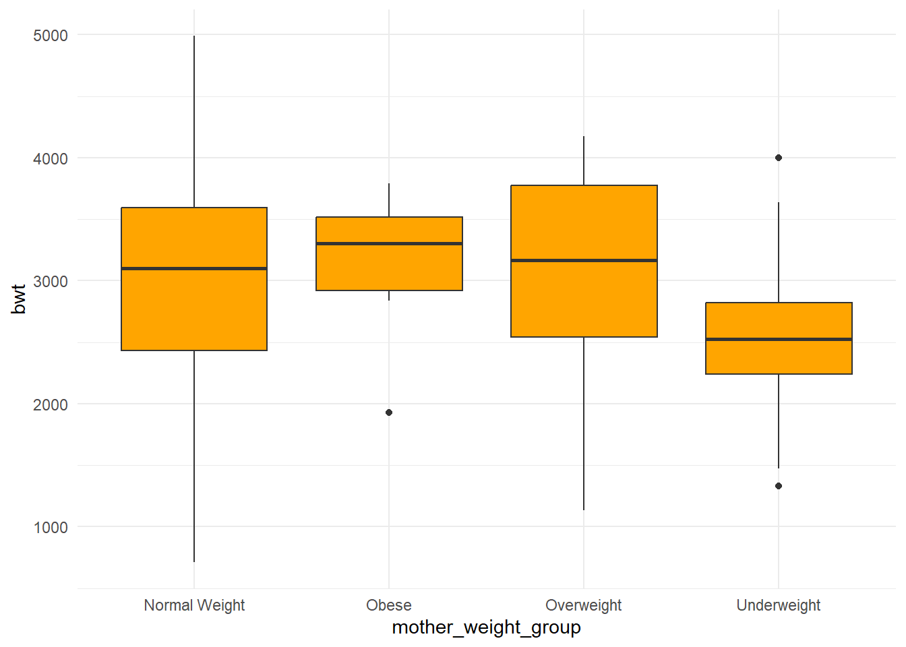
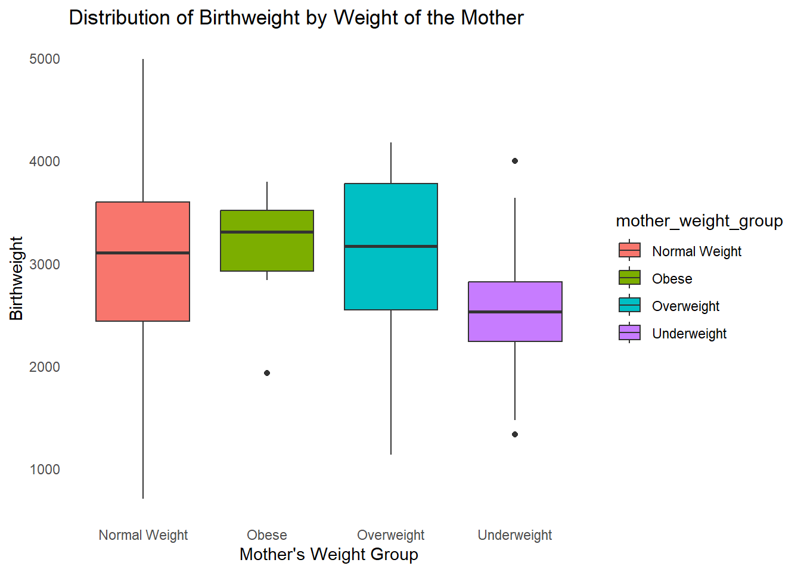
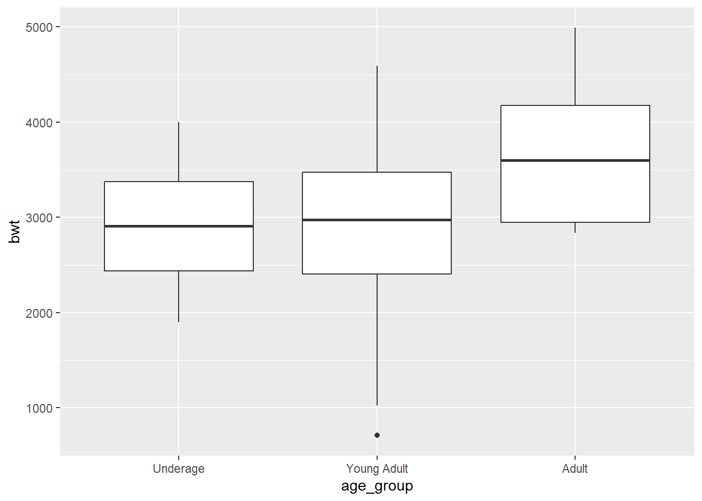
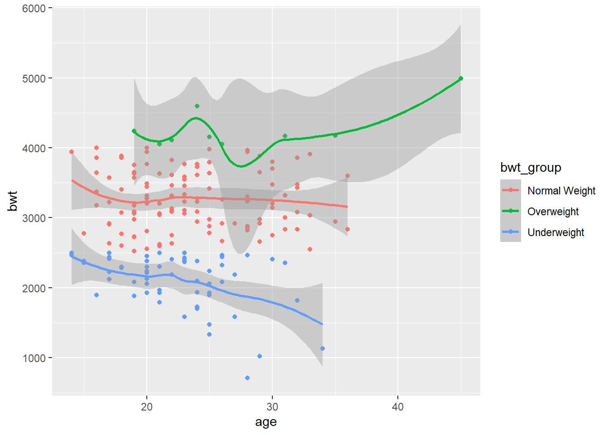
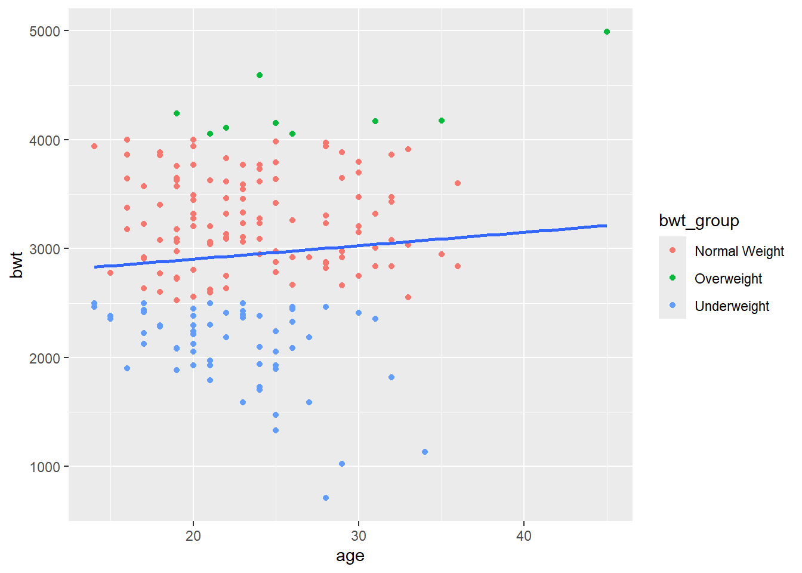

age lwt bwt
Min. :14.00 Min. : 80.0 Min. : 709
1st Qu.:19.00 1st Qu.:110.0 1st Qu.:2414
Median :23.00 Median :121.0 Median :2977
Mean :23.24 Mean :129.8 Mean :2944
3rd Qu.:26.00 3rd Qu.:140.0 3rd Qu.:3475
Max. :45.00 Max. :250.0 Max. :4990
lbw_data_groups %>%ggplot(aes(y = bwt, x = mother_weight_group)) +geom_boxplot(fill ="orange") +theme_minimal()

lbw_data_groups %>%ggplot(aes(y = bwt, x = mother_weight_group, fill = mother_weight_group)) +geom_boxplot() +labs(title ="Distribution of Birthweight by Weight of the Mother",x ="Mother's Weight Group",y ="Birthweight") +theme_minimal() +theme(panel.grid.minor.y =element_blank(),panel.grid.major.x =element_blank())
lbw_data_groups %>%ggplot(aes(y = bwt, x = mother_weight_group, fill = mother_weight_group)) +geom_boxplot() +labs(title ="Distribution of Birthweight by Weight of the Mother",x ="Mother's Weight Group",y ="Birthweight") +theme_minimal() +theme(panel.grid =element_blank())

lbw_data_groups %>%ggplot(aes(y = bwt, x = age_group)) +geom_boxplot()

lbw_data_groups %>%ggplot(aes(y = bwt, x = age)) +geom_point(color ="purple")
`geom_smooth()` using method = 'loess' and formula = 'y ~ x'

lbw_data_groups %>%ggplot(aes(y = bwt, x = age)) +geom_point(aes(colour = bwt_group)) +geom_smooth(method ='lm', se =FALSE)
`geom_smooth()` using formula = 'y ~ x'

lbw_data_groups %>%ggplot(aes(y = bwt, x = mother_weight_group, fill = mother_weight_group)) +geom_boxplot() +labs(title ="Distribution of Birthweight by Weight of the Mother",x ="Mother's Weight Group",y ="Birthweight") +theme_light()